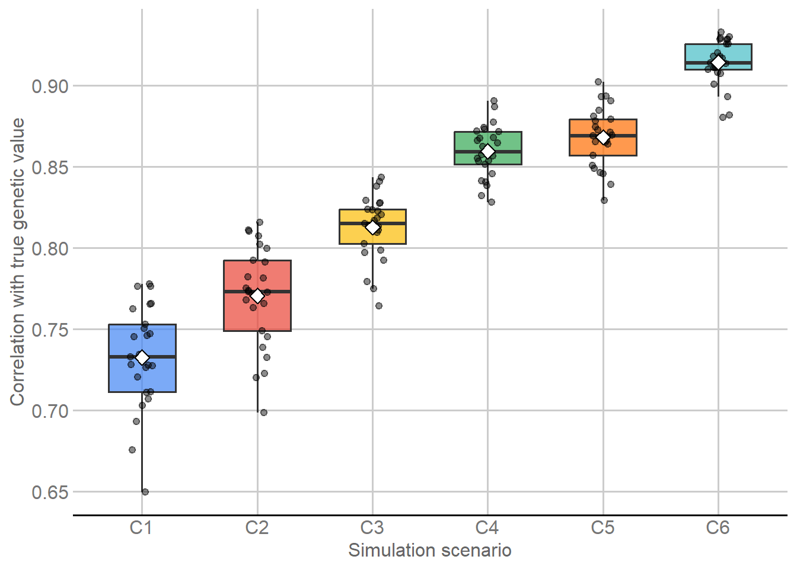
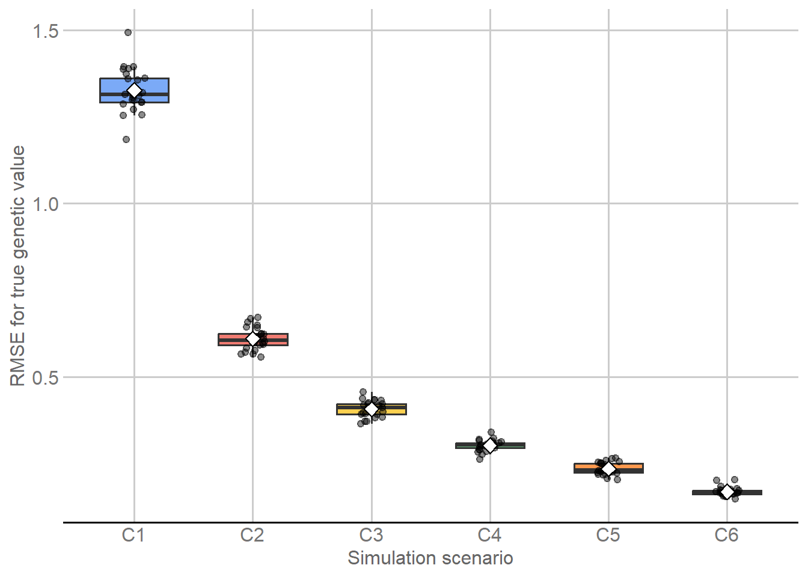

Last updated: 2026-09-04
Checks: 7 0
Knit directory:
Genomic-Prediction-using-Regularized-Artificial-Neural-Networks/
This reproducible R Markdown analysis was created with workflowr (version 1.7.2). The Checks tab describes the reproducibility checks that were applied when the results were created. The Past versions tab lists the development history.
Great! Since the R Markdown file has been committed to the Git repository, you know the exact version of the code that produced these results.
Great job! The global environment was empty. Objects defined in the global environment can affect the analysis in your R Markdown file in unknown ways. For reproduciblity it’s best to always run the code in an empty environment.
The command set.seed(20260821) was run prior to running
the code in the R Markdown file. Setting a seed ensures that any results
that rely on randomness, e.g. subsampling or permutations, are
reproducible.
Great job! Recording the operating system, R version, and package versions is critical for reproducibility.
Nice! There were no cached chunks for this analysis, so you can be confident that you successfully produced the results during this run.
Great job! Using relative paths to the files within your workflowr project makes it easier to run your code on other machines.
Great! You are using Git for version control. Tracking code development and connecting the code version to the results is critical for reproducibility.
The results in this page were generated with repository version 982de09. See the Past versions tab to see a history of the changes made to the R Markdown and HTML files.
Note that you need to be careful to ensure that all relevant files for
the analysis have been committed to Git prior to generating the results
(you can use wflow_publish or
wflow_git_commit). workflowr only checks the R Markdown
file, but you know if there are other scripts or data files that it
depends on. Below is the status of the Git repository when the results
were generated:
Ignored files:
Ignored: .Rhistory
Ignored: .Rproj.user/
Ignored: .github/
Ignored: .local/
Ignored: code/legacy/
Ignored: data/dados_reais/Fenótipos 2014_2015_2016_C.arabica (1).xlsx
Ignored: data/dados_reais/Fenótipos 2014_2015_2016_C.arabica.xlsx
Ignored: data/dados_reais/FiltStep1_minQ10.0_minDP3_DPrange15-maxMeanDepth750_miss0.4_maf0.01_mac1_EMB_291701_SNPs_Raw.vcf.012.012
Ignored: data/dados_reais/FiltStep1_minQ10.0_minDP3_DPrange15-maxMeanDepth750_miss0.4_maf0.01_mac1_EMB_291701_SNPs_Raw.vcf.012.012.indv
Ignored: data/dados_reais/FiltStep1_minQ10.0_minDP3_DPrange15-maxMeanDepth750_miss0.4_maf0.01_mac1_EMB_291701_SNPs_Raw.vcf.012.012.pos
Ignored: data/dados_reais/FiltStep1_minQ10_minDP3_DPrange15-750_miss0.4_maf0.01_mac1_EMB_291701_filt1_snps_RAW.012.indv.txt
Ignored: data/dados_reais/FiltStep1_minQ10_minDP3_DPrange15-750_miss0.4_maf0.01_mac1_EMB_291701_filt1_snps_RAW.012.pos.txt
Ignored: data/dados_reais/FiltStep1_minQ10_minDP3_DPrange15-750_miss0.4_maf0.01_mac1_EMB_291701_filt1_snps_RAW.012.txt
Ignored: data/dados_reais/Rótulos C. arabica_Proj_Piloto.xlsx
Ignored: data/dados_reais/Rótulos Novos SNPs.xls
Ignored: data/dados_reais/dados_cafe.xlsx
Ignored: data/dados_reais/fpls-09-01934.pdf
Ignored: data/dados_reais/geno_real.rds
Ignored: data/dados_reais/pheno_real.rds
Ignored: data/dados_reais/plants-13-01876-v2.pdf
Ignored: data/dados_reais/pos_geno_real.rds
Ignored: renv/library/
Ignored: renv/staging/
Untracked files:
Untracked: output/simulated/m03/
Note that any generated files, e.g. HTML, png, CSS, etc., are not included in this status report because it is ok for generated content to have uncommitted changes.
These are the previous versions of the repository in which changes were
made to the R Markdown (analysis/simulated_data_gblup.Rmd)
and HTML (docs/simulated_data_gblup.html) files. If you’ve
configured a remote Git repository (see ?wflow_git_remote),
click on the hyperlinks in the table below to view the files as they
were in that past version.
| File | Version | Author | Date | Message |
|---|---|---|---|---|
| Rmd | 982de09 | github-actions[bot] | 2026-09-04 | Finalize M03 scientific wording and reader flow |
| Rmd | 9d184fe | Weverton Gomes da Costa | 2026-09-04 | Refine M03 GBLUP-ADE reader flow |
| html | c8124ab | WevertonGomesCosta | 2026-09-02 | Refresh integrated M01-M05 reproducibility metadata |
| html | 142ac03 | WevertonGomesCosta | 2026-09-01 | Rebuild M03 after editorial revision |
| Rmd | c02682a | Weverton Gomes da Costa | 2026-09-01 | Refine M03 GBLUP-ADE tutorial |
| html | 217e778 | WevertonGomesCosta | 2026-09-01 | Complete reader-first didactic cleanup |
| Rmd | dea5684 | github-actions[bot] | 2026-08-31 | Simplify tutorials while preserving audit contracts |
| html | 7a3fbcd | WevertonGomesCosta | 2026-08-31 | Refresh tutorial site after final build |
| Rmd | a56e596 | WevertonGomesCosta | 2026-08-31 | Expose canonical tutorial parameters and helpers |
| html | a56e596 | WevertonGomesCosta | 2026-08-31 | Expose canonical tutorial parameters and helpers |
| Rmd | cdd92f7 | WevertonGomesCosta | 2026-08-31 | Simplify GBLUP and ANN tutorial code |
| html | cdd92f7 | WevertonGomesCosta | 2026-08-31 | Simplify GBLUP and ANN tutorial code |
| Rmd | 93733ed | WevertonGomesCosta | 2026-08-31 | Restore tutorial code visibility |
| html | 93733ed | WevertonGomesCosta | 2026-08-31 | Restore tutorial code visibility |
| Rmd | c6ba331 | WevertonGomesCosta | 2026-08-31 | Refactor GBLUP and ANN modules as tutorials |
| html | c6ba331 | WevertonGomesCosta | 2026-08-31 | Refactor GBLUP and ANN modules as tutorials |
| html | f228245 | WevertonGomesCosta | 2026-08-31 | Publish reader-focused simulated workflow |
| Rmd | c508a78 | WevertonGomesCosta | 2026-08-29 | Refine GBLUP-ADE results for readers |
| html | fa907f6 | WevertonGomesCosta | 2026-08-28 | Publish audited workflowr documentation |
| Rmd | 42e2242 | Weverton Gomes da Costa | 2026-08-28 | Explain GBLUP-ADE covariance components before implementation |
| Rmd | 0b8a4f6 | WevertonGomesCosta | 2026-08-28 | Revise canonical workflow documentation and scientific narrative |
| html | 0b8a4f6 | WevertonGomesCosta | 2026-08-28 | Revise canonical workflow documentation and scientific narrative |
| html | 1d72f0a | WevertonGomesCosta | 2026-08-27 | Build site. |
| Rmd | d068fd6 | WevertonGomesCosta | 2026-08-27 | refactor: harden lightweight model runtime |
| html | f7779fd | WevertonGomesCosta | 2026-08-27 | Build site. |
| html | 3caadce | WevertonGomesCosta | 2026-08-27 | Build site. |
| Rmd | 0ec25da | WevertonGomesCosta | 2026-08-27 | refactor: organize canonical outputs and local runtime artifacts |
| html | e48bb57 | WevertonGomesCosta | 2026-08-27 | Build site. |
| Rmd | f9c736e | WevertonGomesCosta | 2026-08-27 | refactor: establish canonical simulated genomic prediction workflow |
| html | f9c736e | WevertonGomesCosta | 2026-08-27 | refactor: establish canonical simulated genomic prediction workflow |
This module fits the GBLUP-ADE benchmark to the six simulated scenarios under the validation design defined in M02. Each scenario is evaluated on the same 25 outer held-out splits, giving 6 x 25 = 150 scenario-by-split fits.
Four principles define the analysis:
NA
before fitting.The benchmark separates additive, dominance, and epistatic genomic components. Its results are later compared with the regularized ANN branch under exactly the same outer validation assignments.
Four packages support the module:
knitr formats the displayed
tables.ggplot2 summarizes predictive
performance across scenarios and outer splits.ggthemes applies the same Google Docs
visual style used in M01 and M02.sommer constructs the genomic
relationship matrices and fits GBLUP-ADE when a new run is explicitly
requested.RUN_GBLUP <- identical(Sys.getenv("RUN_GBLUP", "0"), "1")
library(knitr) # Format tables shown in the page.
library(ggplot2) # Plot held-out predictive performance.
library(ggthemes) # Apply the Google Docs theme and palettes.
if (RUN_GBLUP) {
suppressPackageStartupMessages(
library(sommer) # Build genomic kernels and fit GBLUP-ADE.
)
}A normal page build uses the saved GBLUP-ADE results rather than
refitting all 150 models. Setting the environment variable
RUN_GBLUP=1 activates the full fitting workflow.
The statistical benchmark itself has two fixed controls:
20260821.sommer::mmes() iterations: 20 for
every scenario-by-split fit.The iteration count is part of the prespecified benchmark and is not tuned from outer-assessment performance.
SEED_GLOBAL <- 20260821L
N_ITERS_SOMMER <- 20L
fitting_control <- data.frame(
Parameter = c(
"Global seed",
"Run new GBLUP-ADE fits",
"sommer iterations per fit"
),
Value = c(
SEED_GLOBAL,
RUN_GBLUP,
N_ITERS_SOMMER
),
Role = c(
"Reproduce the fitting workflow.",
"Control whether all 150 fits are executed.",
"Use the same fixed fitting control for every task."
)
)
fitting_control |>
knitr::kable(
format = "html",
caption = "Fixed GBLUP-ADE execution and fitting settings",
row.names = FALSE,
table.attr = 'class="table table-striped table-hover table-bordered"'
)| Parameter | Value | Role |
|---|---|---|
| Global seed | 20260821 | Reproduce the fitting workflow. |
| Run new GBLUP-ADE fits | 0 | Control whether all 150 fits are executed. |
| sommer iterations per fit | 20 | Use the same fixed fitting control for every task. |
The model branch starts from two objects prepared earlier in the workflow:
The next chunk reads these objects directly and makes their roles explicit.
common <- readRDS(
"output/simulated/audit/preprocessed_simulated_common.rds"
)
cv <- readRDS(
"output/simulated/validation/simulated_cv_design.rds"
)
phenotype <- common$phenotype
true_g <- common$true_genetic_value
geno <- common$genotype_m101
control <- common$scenario_control
ids <- seq_len(nrow(geno))
id_labels <- sprintf("ID%04d", ids)
rownames(geno) <- id_labels
scenario_names <- colnames(phenotype)
input_summary <- data.frame(
Object = c(
"Phenotype",
"True genetic value",
"Genotype",
"Outer validation splits"
),
Structure = c(
paste(dim(phenotype), collapse = " x "),
paste(dim(true_g), collapse = " x "),
paste(dim(geno), collapse = " x "),
length(cv$outer_splits)
),
Role = c(
"Response used for fitting after outer assessment is masked.",
"Primary held-out evaluation target only.",
"Marker information used to construct A, D, and E.",
"Common held-out evaluation design used by all models."
),
stringsAsFactors = FALSE
)
input_summary |>
knitr::kable(
format = "html",
caption = "Objects entering the GBLUP-ADE workflow",
row.names = FALSE,
table.attr = 'class="table table-striped table-hover table-bordered"'
)| Object | Structure | Role |
|---|---|---|
| Phenotype | 1000 x 6 | Response used for fitting after outer assessment is masked. |
| True genetic value | 1000 x 6 | Primary held-out evaluation target only. |
| Genotype | 1000 x 4010 | Marker information used to construct A, D, and E. |
| Outer validation splits | 25 | Common held-out evaluation design used by all models. |
The dimensions establish the data available to every task:
The crucial separation is by information type, not by availability of genotype. The 200 outer-assessment individuals retain their marker profiles, but their phenotypes are hidden before model fitting. True genetic values never enter partition generation, kernel construction, fitting, or prediction and are subset only after held-out predictions have been produced.
For one scenario, the benchmark is
\[ \mathbf{y} = \mathbf{1}\mu + \mathbf{a} + \mathbf{d} + \mathbf{e} + \boldsymbol{\varepsilon}, \]
where
\[ \mathbf{a}\sim N(0,\mathbf{A}\sigma_a^2),\qquad \mathbf{d}\sim N(0,\mathbf{D}\sigma_d^2), \]
\[ \mathbf{e}\sim N(0,\mathbf{E}\sigma_e^2),\qquad \boldsymbol{\varepsilon}\sim N(0,\mathbf{I}\sigma_\varepsilon^2). \]
The components have distinct roles:
The three random effects are associated with genomic relationship matrices constructed from the same marker matrix:
relationship_matrices <- data.frame(
Matrix = c("A", "D", "E"),
Genetic_component = c(
"Additive",
"Dominance",
"Epistatic"
),
Constructor = c(
"sommer::A.mat()",
"sommer::D.mat()",
"sommer::E.mat(type = \"A#A\")"
),
Interpretation = c(
"Additive genomic covariance among individuals.",
"Dominance genomic covariance among individuals.",
"Second-order additive x additive genomic covariance."
)
)
relationship_matrices |>
knitr::kable(
format = "html",
caption = "Genomic relationship matrices used by GBLUP-ADE",
row.names = FALSE,
table.attr = 'class="table table-striped table-hover table-bordered"'
)| Matrix | Genetic_component | Constructor | Interpretation |
|---|---|---|---|
| A | Additive | sommer::A.mat() | Additive genomic covariance among individuals. |
| D | Dominance | sommer::D.mat() | Dominance genomic covariance among individuals. |
| E | Epistatic | sommer::E.mat(type = “A#A”) | Second-order additive x additive genomic covariance. |
These matrices describe genomic covariance among individuals. They do
not use phenotype or true genetic value, and they are built once and
reused across all 150 fits. In this benchmark, the epistatic matrix is
the second-order additive x additive kernel (type = "A#A"),
matching the interaction component represented by E rather than an
unspecified generic epistasis kernel.
In sommer::mmes(), ism() identifies the
individual levels associated with a random effect and vsm()
links that effect to its genomic relationship matrix through
Gu.
The fitted genomic component is
\[ \widehat{G}= \widehat{a}+\widehat{d}+\widehat{e}. \]
The final prediction stored by this benchmark is
\[ \widehat{y}= \widehat{\mu}+\widehat{G}. \]
Thus the output preserves both the total prediction and the additive,
dominance, epistatic, and summed genomic components for every held-out
individual. The historical output field GEBV is retained
for compatibility; in this ADE model it stores the summed additive,
dominance, and epistatic prediction and is interpreted here as the
total predicted genetic component, not as a breeding
value in the strict additive-only sense.
Two targets are evaluated after prediction:
For each target, the stored metrics are Pearson
correlation, RMSE, MAE, bias, calibration slope, and \(R^2\). Bias is defined as
mean(predicted - observed), so positive values indicate
overprediction. The calibration slope is estimated from
observed ~ predicted, and \(R^2=1-SSE/SST\). These formulas are
calculated directly in the fitting loop instead of being hidden behind
local metric wrappers.
The six scenarios are crossed with the 25 outer splits from M02. This produces 150 distinct fitting tasks while preserving the same held-out individuals used by the ANN branch.
outer_meta <- unique(
cv$outer_assignments[
, c("Repetition", "OuterFold", "SplitID")
]
)
outer_meta <- outer_meta[
order(
outer_meta$Repetition,
outer_meta$OuterFold
),
]
task_table <- merge(
data.frame(
Scenario = scenario_names,
stringsAsFactors = FALSE
),
outer_meta,
by = NULL
)
task_table <- task_table[
order(
match(task_table$Scenario, scenario_names),
task_table$Repetition,
task_table$OuterFold
),
]
task_table$TaskID <- paste(
task_table$Scenario,
task_table$SplitID,
sep = "_"
)
rownames(task_table) <- NULL
head(task_table, 15) |>
knitr::kable(
format = "html",
caption = "First 15 of the 150 GBLUP-ADE scenario-by-split tasks",
row.names = FALSE,
table.attr = 'class="table table-striped table-hover table-bordered"'
)| Scenario | Repetition | OuterFold | SplitID | TaskID |
|---|---|---|---|---|
| C1 | 1 | 1 | R01_F01 | C1_R01_F01 |
| C1 | 1 | 2 | R01_F02 | C1_R01_F02 |
| C1 | 1 | 3 | R01_F03 | C1_R01_F03 |
| C1 | 1 | 4 | R01_F04 | C1_R01_F04 |
| C1 | 1 | 5 | R01_F05 | C1_R01_F05 |
| C1 | 2 | 1 | R02_F01 | C1_R02_F01 |
| C1 | 2 | 2 | R02_F02 | C1_R02_F02 |
| C1 | 2 | 3 | R02_F03 | C1_R02_F03 |
| C1 | 2 | 4 | R02_F04 | C1_R02_F04 |
| C1 | 2 | 5 | R02_F05 | C1_R02_F05 |
| C1 | 3 | 1 | R03_F01 | C1_R03_F01 |
| C1 | 3 | 2 | R03_F02 | C1_R03_F02 |
| C1 | 3 | 3 | R03_F03 | C1_R03_F03 |
| C1 | 3 | 4 | R03_F04 | C1_R03_F04 |
| C1 | 3 | 5 | R03_F05 | C1_R03_F05 |
TaskID links each fit to its 200 held-out predictions
and later provides the common scenario-by-split key used for model
comparison.
The fitting sequence is the same for every task:
NA;The same genomic kernels are reused for all tasks. Only the scenario response and outer assessment set change from one fit to another.
sommer::mmes() stores the fitted random effects in
fit$uList. In the complete workflow below, each additive,
dominance, and epistatic effect is mapped back to the 1,000 individual
positions explicitly with its incidence matrix; no local helper function
hides that transformation.
For one scenario and one outer split, the mixed-model call is:
fit <- sommer::mmes(
y ~ 1,
random = ~
vsm(ism(id), Gu = A_matrix) +
vsm(ism(idd), Gu = D_matrix) +
vsm(ism(ide), Gu = E_matrix),
rcov = ~ units,
nIters = 20,
data = dat,
verbose = FALSE
)At this point dat$y contains phenotype values for the
800 outer-analysis individuals and NA for the 200
outer-assessment individuals.
The full code is retained so the saved benchmark can be regenerated
explicitly. It runs only when RUN_GBLUP=1; the standard
page build skips these expensive fits and reads the existing saved
results instead.
set.seed(SEED_GLOBAL)
run_start <- proc.time()[["elapsed"]]
# Build A, D, and E once from the marker matrix.
kernel_start <- proc.time()[["elapsed"]]
A_matrix <- sommer::A.mat(geno)
D_matrix <- sommer::D.mat(geno)
E_matrix <- sommer::E.mat(
geno,
nishio = TRUE,
type = "A#A",
min.MAF = 0.02
)
kernel_seconds <- proc.time()[["elapsed"]] - kernel_start
rownames(A_matrix) <- colnames(A_matrix) <- id_labels
rownames(D_matrix) <- colnames(D_matrix) <- id_labels
rownames(E_matrix) <- colnames(E_matrix) <- id_labels
kernel_summary <- data.frame(
Kernel = c(
"Additive",
"Dominance",
"Epistatic"
),
Rows = c(
nrow(A_matrix),
nrow(D_matrix),
nrow(E_matrix)
),
Columns = c(
ncol(A_matrix),
ncol(D_matrix),
ncol(E_matrix)
),
Symmetric = c(
isTRUE(
all.equal(
A_matrix,
t(A_matrix),
tolerance = 1e-8
)
),
isTRUE(
all.equal(
D_matrix,
t(D_matrix),
tolerance = 1e-8
)
),
isTRUE(
all.equal(
E_matrix,
t(E_matrix),
tolerance = 1e-8
)
)
),
Finite = c(
all(is.finite(A_matrix)),
all(is.finite(D_matrix)),
all(is.finite(E_matrix))
),
Mean_diagonal = c(
mean(diag(A_matrix)),
mean(diag(D_matrix)),
mean(diag(E_matrix))
),
Kernel_build_seconds = rep(
kernel_seconds,
3L
),
stringsAsFactors = FALSE
)
result_list <- vector(
"list",
nrow(task_table)
)
prediction_list <- vector(
"list",
nrow(task_table)
)
for (i in seq_len(nrow(task_table))) {
task <- task_table[i, ]
scenario <- task$Scenario
scenario_index <- match(
scenario,
scenario_names
)
# Recover the fixed outer split defined in M02.
split <- cv$outer_splits[[task$SplitID]]
analysis_index <- match(
split$analysis_ids,
ids
)
assessment_index <- match(
split$assessment_ids,
ids
)
phenotype_vector <- phenotype[
,
scenario_index
]
id_factor <- factor(
id_labels,
levels = id_labels
)
dat <- data.frame(
y = phenotype_vector,
id = id_factor,
idd = id_factor,
ide = id_factor
)
# Remove all response information from the outer assessment set.
dat$y[assessment_index] <- NA_real_
fit_start <- proc.time()[["elapsed"]]
# Fit the prespecified additive + dominance + epistatic model.
fit <- sommer::mmes(
y ~ 1,
random = ~
vsm(ism(id), Gu = A_matrix) +
vsm(ism(idd), Gu = D_matrix) +
vsm(ism(ide), Gu = E_matrix),
rcov = ~ units,
nIters = N_ITERS_SOMMER,
data = dat,
verbose = FALSE,
dateWarning = FALSE
)
fit_seconds <-
proc.time()[["elapsed"]] -
fit_start
prediction_start <- proc.time()[["elapsed"]]
# Recover the additive effect for all individuals.
additive_effect <- as.matrix(
fit$uList[["vsm(ism(id), Gu = A_matrix)"]]
)
additive_incidence <- model.matrix(
~ id - 1,
data = dat
)
additive <- as.numeric(
additive_incidence %*%
additive_effect[, 1L, drop = FALSE]
)
# Recover the dominance effect for all individuals.
dominance_effect <- as.matrix(
fit$uList[["vsm(ism(idd), Gu = D_matrix)"]]
)
dominance_incidence <- model.matrix(
~ idd - 1,
data = dat
)
dominance <- as.numeric(
dominance_incidence %*%
dominance_effect[, 1L, drop = FALSE]
)
# Recover the additive x additive epistatic effect for all individuals.
epistatic_effect <- as.matrix(
fit$uList[["vsm(ism(ide), Gu = E_matrix)"]]
)
epistatic_incidence <- model.matrix(
~ ide - 1,
data = dat
)
epistatic <- as.numeric(
epistatic_incidence %*%
epistatic_effect[, 1L, drop = FALSE]
)
genetic_component <-
additive +
dominance +
epistatic
intercept <- as.numeric(fit$b)[1L]
predicted_value <- intercept + genetic_component
predict_seconds <-
proc.time()[["elapsed"]] -
prediction_start
# Evaluate only after held-out predictions have been generated.
observed_test <- phenotype_vector[
assessment_index
]
true_g_test <- true_g[
assessment_index,
scenario_index
]
predicted_test <- predicted_value[
assessment_index
]
genetic_component_test <- genetic_component[
assessment_index
]
# Primary evaluation against the known simulated genetic value.
genetic_correlation <- cor(
predicted_test,
true_g_test
)
genetic_rmse <- sqrt(
mean((predicted_test - true_g_test)^2)
)
genetic_mae <- mean(
abs(predicted_test - true_g_test)
)
genetic_bias <- mean(
predicted_test - true_g_test
)
genetic_slope <- as.numeric(
coef(lm(true_g_test ~ predicted_test))[2]
)
genetic_r2 <- 1 -
sum((true_g_test - predicted_test)^2) /
sum((true_g_test - mean(true_g_test))^2)
# Secondary evaluation against the observed phenotype.
phenotype_correlation <- cor(
predicted_test,
observed_test
)
phenotype_rmse <- sqrt(
mean((predicted_test - observed_test)^2)
)
phenotype_mae <- mean(
abs(predicted_test - observed_test)
)
phenotype_bias <- mean(
predicted_test - observed_test
)
phenotype_slope <- as.numeric(
coef(lm(observed_test ~ predicted_test))[2]
)
phenotype_r2 <- 1 -
sum((observed_test - predicted_test)^2) /
sum((observed_test - mean(observed_test))^2)
meta <- control[
control$Scenario == scenario,
,
drop = FALSE
]
result_list[[i]] <- data.frame(
Dataset = "simulated",
Scenario = scenario,
QTL_N = meta$QTL_N,
H2_nominal = meta$H2_nominal,
Repetition = task$Repetition,
Fold = task$OuterFold,
SplitID = task$SplitID,
TaskID = task$TaskID,
Model = "GBLUP_ADE",
N_train = length(analysis_index),
N_test = length(assessment_index),
N_pred_finite = sum(is.finite(predicted_test)),
Genetic_Correlation =
genetic_correlation,
Genetic_RMSE =
genetic_rmse,
Genetic_MAE =
genetic_mae,
Genetic_Bias =
genetic_bias,
Genetic_Slope =
genetic_slope,
Genetic_R2 =
genetic_r2,
GEBV_TrueG_Correlation =
cor(genetic_component_test, true_g_test),
Phenotype_Correlation =
phenotype_correlation,
Phenotype_RMSE =
phenotype_rmse,
Phenotype_MAE =
phenotype_mae,
Phenotype_Bias =
phenotype_bias,
Phenotype_Slope =
phenotype_slope,
Phenotype_R2 =
phenotype_r2,
Kernel_build_seconds = kernel_seconds,
Fit_seconds = fit_seconds,
Predict_seconds = predict_seconds,
Status = "ok",
Error = NA_character_,
stringsAsFactors = FALSE
)
prediction_list[[i]] <- data.frame(
Dataset = "simulated",
Scenario = scenario,
QTL_N = meta$QTL_N,
H2_nominal = meta$H2_nominal,
Repetition = task$Repetition,
Fold = task$OuterFold,
SplitID = task$SplitID,
TaskID = task$TaskID,
Model = "GBLUP_ADE",
ID = ids[assessment_index],
Observed_Phenotype = observed_test,
True_Genetic_Value = true_g_test,
Predicted_Value = predicted_test,
GEBV = genetic_component_test,
Additive_Prediction = additive[assessment_index],
Dominance_Prediction = dominance[assessment_index],
Epistatic_Prediction = epistatic[assessment_index],
Status = "ok",
stringsAsFactors = FALSE
)
cat(
sprintf(
"[%03d/%03d] %s | rG=%.4f | RMSE_G=%.4f | fit=%.2fs\n",
i,
nrow(task_table),
task$TaskID,
result_list[[i]]$Genetic_Correlation,
result_list[[i]]$Genetic_RMSE,
fit_seconds
)
)
}
results <- do.call(
rbind,
result_list
)
predictions <- do.call(
rbind,
prediction_list
)
rownames(results) <- NULL
rownames(predictions) <- NULL
run_seconds <-
proc.time()[["elapsed"]] -
run_start
run_metadata <- list(
dataset = "simulated",
model = "GBLUP_ADE",
seed_global = SEED_GLOBAL,
sommer_version = as.character(
packageVersion("sommer")
),
nIters_sommer = N_ITERS_SOMMER,
tasks = nrow(results),
prediction_rows = nrow(predictions),
kernel_build_seconds = kernel_seconds,
total_run_seconds = run_seconds,
timestamp = as.character(Sys.time())
)The saved kernel summary records numerical properties of the three relationship matrices from the completed benchmark run.
kernel_summary <- read.csv(
"output/simulated/gblup/simulated_gblup_ade_kernel_summary.csv",
stringsAsFactors = FALSE
)
kernel_display <- kernel_summary[
, c(
"Kernel",
"Rows",
"Columns",
"Symmetric",
"Finite",
"Mean_diagonal"
)
]
kernel_display |>
knitr::kable(
format = "html",
digits = 4,
caption = "Numerical structure of the GBLUP-ADE genomic kernels",
row.names = FALSE,
table.attr = 'class="table table-striped table-hover table-bordered"'
)| Kernel | Rows | Columns | Symmetric | Finite | Mean_diagonal |
|---|---|---|---|---|---|
| Additive | 1000 | 1000 | TRUE | TRUE | 0.9998 |
| Dominance | 1000 | 1000 | TRUE | TRUE | 0.9997 |
| Epistatic | 1000 | 1000 | TRUE | TRUE | 1.0248 |
The three kernels are 1,000 x 1,000, finite, and symmetric. Their mean diagonals are close to one, confirming the numerical structure expected for the relationship matrices used in the fitted benchmark.
The normal page build now reads the completed GBLUP-ADE outputs. This keeps the scientific results fixed while allowing the explanation, tables, and figures to be rebuilt quickly.
results <- readRDS(
"output/simulated/gblup/simulated_gblup_ade_results.rds"
)
predictions <- readRDS(
"output/simulated/gblup/simulated_gblup_ade_predictions.rds"
)
run_metadata <- readRDS(
"output/simulated/gblup/simulated_gblup_ade_run_metadata.rds"
)
result_structure <- data.frame(
Object = c(
"Task-level results",
"Held-out predictions"
),
Rows = c(
nrow(results),
nrow(predictions)
),
Unique_tasks = c(
length(unique(results$TaskID)),
length(unique(predictions$TaskID))
),
Rows_per_task = c(
1,
paste(
range(
as.integer(
table(predictions$TaskID)
)
),
collapse = " to "
)
)
)
result_structure |>
knitr::kable(
format = "html",
caption = "Stored GBLUP-ADE result structure",
row.names = FALSE,
table.attr = 'class="table table-striped table-hover table-bordered"'
)| Object | Rows | Unique_tasks | Rows_per_task |
|---|---|---|---|
| Task-level results | 150 | 150 | 1 |
| Held-out predictions | 30000 | 150 | 200 to 200 |
The stored benchmark contains one task-level result row for each of
the 150 scenario-by-split fits and 200 held-out predictions per task.
The historical Status = "ok" field indicates that a fit
returned and produced stored predictions; it is not interpreted here as
independent evidence that numerical convergence was formally diagnosed
for all 150 fits.
The primary and secondary metrics are averaged across the 25 outer splits within each scenario.
ok_results <- results[
results$Status == "ok",
,
drop = FALSE
]
scenario_performance <- aggregate(
cbind(
Genetic_Correlation,
Genetic_RMSE,
Genetic_MAE,
Genetic_Bias,
Genetic_Slope,
Genetic_R2,
Phenotype_Correlation,
Phenotype_RMSE,
Phenotype_MAE,
Phenotype_Bias,
Phenotype_Slope,
Phenotype_R2
) ~ Scenario + QTL_N + H2_nominal,
data = ok_results,
FUN = mean,
na.rm = TRUE
)
scenario_performance <- scenario_performance[
order(
match(
scenario_performance$Scenario,
scenario_names
)
),
]
genetic_performance_display <- scenario_performance[
, c(
"Scenario",
"QTL_N",
"H2_nominal",
"Genetic_Correlation",
"Genetic_RMSE",
"Genetic_MAE",
"Genetic_Bias",
"Genetic_Slope",
"Genetic_R2"
)
]
phenotype_performance_display <- scenario_performance[
, c(
"Scenario",
"QTL_N",
"H2_nominal",
"Phenotype_Correlation",
"Phenotype_RMSE",
"Phenotype_MAE",
"Phenotype_Bias",
"Phenotype_Slope",
"Phenotype_R2"
)
]genetic_performance_display |>
knitr::kable(
format = "html",
digits = 4,
caption = "Primary evaluation: true genetic-value prediction across the 25 outer splits",
row.names = FALSE,
table.attr = 'class="table table-striped table-hover table-bordered"'
)| Scenario | QTL_N | H2_nominal | Genetic_Correlation | Genetic_RMSE | Genetic_MAE | Genetic_Bias | Genetic_Slope | Genetic_R2 |
|---|---|---|---|---|---|---|---|---|
| C1 | 8 | 0.7 | 0.7324 | 1.3262 | 1.0777 | -0.0035 | 1.0099 | 0.5312 |
| C2 | 40 | 0.7 | 0.7704 | 0.6096 | 0.4886 | 0.0100 | 1.0151 | 0.5866 |
| C3 | 80 | 0.5 | 0.8126 | 0.4070 | 0.3234 | 0.0020 | 1.0148 | 0.6543 |
| C4 | 120 | 0.5 | 0.8594 | 0.3020 | 0.2402 | 0.0037 | 0.9936 | 0.7324 |
| C5 | 240 | 0.3 | 0.8681 | 0.2346 | 0.1905 | 0.0028 | 1.0213 | 0.7477 |
| C6 | 480 | 0.3 | 0.9141 | 0.1684 | 0.1359 | -0.0008 | 1.0626 | 0.8292 |
Across the six scenarios, mean held-out genetic correlation ranges from 0.7324 to 0.9141, while mean genetic RMSE ranges from 0.1684 to 1.3262.
The C1-C6 sequence represents a prespecified genetic-complexity gradient. QTL number and nominal heritability change together across that sequence, so the scenario pattern should not be interpreted as the isolated causal effect of either quantity.
phenotype_performance_display |>
knitr::kable(
format = "html",
digits = 4,
caption = "Secondary evaluation: phenotype prediction across the 25 outer splits",
row.names = FALSE,
table.attr = 'class="table table-striped table-hover table-bordered"'
)| Scenario | QTL_N | H2_nominal | Phenotype_Correlation | Phenotype_RMSE | Phenotype_MAE | Phenotype_Bias | Phenotype_Slope | Phenotype_R2 |
|---|---|---|---|---|---|---|---|---|
| C1 | 8 | 0.7 | 0.6103 | 1.8179 | 1.4563 | -0.0035 | 0.9933 | 0.3650 |
| C2 | 40 | 0.7 | 0.6643 | 0.8031 | 0.6318 | 0.0100 | 0.9850 | 0.4339 |
| C3 | 80 | 0.5 | 0.5987 | 0.7484 | 0.6101 | 0.0020 | 1.0051 | 0.3474 |
| C4 | 120 | 0.5 | 0.5978 | 0.6828 | 0.5573 | 0.0037 | 1.0024 | 0.3490 |
| C5 | 240 | 0.3 | 0.4650 | 0.7482 | 0.6136 | 0.0028 | 0.9875 | 0.2085 |
| C6 | 480 | 0.3 | 0.4834 | 0.6437 | 0.5261 | -0.0008 | 1.0133 | 0.2268 |
Phenotype is retained as a secondary target because it contains both genetic and residual variation. The known simulated genetic value remains the primary target for evaluating recovery of the simulated genetic signal.
Scenario means do not show how much performance changes with the particular individuals held out. The next two figures therefore display all 25 outer-split values within each scenario.
p_genetic_correlation <- ggplot(
ok_results,
aes(
x = Scenario,
y = Genetic_Correlation,
fill = Scenario
)
) +
geom_boxplot(
width = 0.58,
outlier.shape = NA,
alpha = 0.70
) +
geom_point(
position = position_jitter(
width = 0.10,
height = 0,
seed = SEED_GLOBAL + 301L
),
alpha = 0.45,
size = 1.8
) +
stat_summary(
fun = mean,
geom = "point",
shape = 23,
size = 3.2,
fill = "white"
) +
scale_fill_gdocs() +
labs(
x = "Simulation scenario",
y = "Correlation with true genetic value",
fill = NULL
) +
theme_gdocs() +
theme(
legend.position = "none"
)
print(p_genetic_correlation)
Held-out true genetic-value correlation for GBLUP-ADE across the 25 outer splits in each scenario. Boxes summarize the split distribution; white diamonds indicate scenario means.
p_genetic_rmse <- ggplot(
ok_results,
aes(
x = Scenario,
y = Genetic_RMSE,
fill = Scenario
)
) +
geom_boxplot(
width = 0.58,
outlier.shape = NA,
alpha = 0.70
) +
geom_point(
position = position_jitter(
width = 0.10,
height = 0,
seed = SEED_GLOBAL + 302L
),
alpha = 0.45,
size = 1.8
) +
stat_summary(
fun = mean,
geom = "point",
shape = 23,
size = 3.2,
fill = "white"
) +
scale_fill_gdocs() +
labs(
x = "Simulation scenario",
y = "RMSE for true genetic value",
fill = NULL
) +
theme_gdocs() +
theme(
legend.position = "none"
)
print(p_genetic_rmse)
Held-out true genetic-value RMSE for GBLUP-ADE across the 25 outer splits in each scenario. Lower values indicate smaller prediction error; white diamonds indicate scenario means.
The figures complement the scenario means in two ways:
The spread within each scenario records sensitivity to the outer assessment sample rather than a new source of model tuning. These split-level distributions are descriptive summaries of held-out-sample sensitivity; the 25 values are not treated as statistically independent replicates or as inferential uncertainty.
A compact numeric summary of the same 25 outer-split distributions is retained for reproducibility and direct comparison across scenarios.
split_summary <- do.call(
rbind,
lapply(
split(
ok_results,
ok_results$Scenario
),
function(x) {
data.frame(
Scenario = unique(x$Scenario),
N = nrow(x),
Cor_mean = mean(
x$Genetic_Correlation,
na.rm = TRUE
),
Cor_sd = sd(
x$Genetic_Correlation,
na.rm = TRUE
),
Cor_min = min(
x$Genetic_Correlation,
na.rm = TRUE
),
Cor_max = max(
x$Genetic_Correlation,
na.rm = TRUE
),
RMSE_mean = mean(
x$Genetic_RMSE,
na.rm = TRUE
),
RMSE_sd = sd(
x$Genetic_RMSE,
na.rm = TRUE
),
MAE_mean = mean(
x$Genetic_MAE,
na.rm = TRUE
),
R2_mean = mean(
x$Genetic_R2,
na.rm = TRUE
)
)
}
)
)
rownames(split_summary) <- NULL
split_summary <- split_summary[
order(
match(
split_summary$Scenario,
scenario_names
)
),
]
split_summary |>
knitr::kable(
format = "html",
digits = 4,
caption = "True genetic-value prediction variability across outer splits",
row.names = FALSE,
table.attr = 'class="table table-striped table-hover table-bordered"'
)| Scenario | N | Cor_mean | Cor_sd | Cor_min | Cor_max | RMSE_mean | RMSE_sd | MAE_mean | R2_mean |
|---|---|---|---|---|---|---|---|---|---|
| C1 | 25 | 0.7324 | 0.0321 | 0.6493 | 0.7778 | 1.3262 | 0.0611 | 1.0777 | 0.5312 |
| C2 | 25 | 0.7704 | 0.0312 | 0.6985 | 0.8156 | 0.6096 | 0.0321 | 0.4886 | 0.5866 |
| C3 | 25 | 0.8126 | 0.0198 | 0.7640 | 0.8433 | 0.4070 | 0.0233 | 0.3234 | 0.6543 |
| C4 | 25 | 0.8594 | 0.0160 | 0.8281 | 0.8906 | 0.3020 | 0.0160 | 0.2402 | 0.7324 |
| C5 | 25 | 0.8681 | 0.0181 | 0.8289 | 0.9020 | 0.2346 | 0.0173 | 0.1905 | 0.7477 |
| C6 | 25 | 0.9141 | 0.0140 | 0.8803 | 0.9327 | 0.1684 | 0.0128 | 0.1359 | 0.8292 |
Reporting the mean, standard deviation, minimum, and maximum correlation prevents one favorable or unfavorable split from determining the interpretation of a scenario. These quantities remain descriptive because repeated cross-validation reuses individuals across outer analysis and assessment sets.
Kernel construction is a one-time operation, whereas model fitting and prediction are repeated across the 150 tasks. The timing summary keeps those costs separate.
time_summary <- aggregate(
cbind(
Fit_seconds,
Predict_seconds
) ~ Scenario,
data = results,
FUN = mean,
na.rm = TRUE
)
time_summary$Kernel_build_seconds <-
run_metadata$kernel_build_seconds
time_summary |>
knitr::kable(
format = "html",
digits = 3,
caption = "GBLUP-ADE computational time",
row.names = FALSE,
table.attr = 'class="table table-striped table-hover table-bordered"'
)| Scenario | Fit_seconds | Predict_seconds | Kernel_build_seconds |
|---|---|---|---|
| C1 | 11.420 | 0.042 | 5.17 |
| C2 | 14.399 | 0.052 | 5.17 |
| C3 | 12.654 | 0.054 | 5.17 |
| C4 | 11.732 | 0.040 | 5.17 |
| C5 | 10.034 | 0.036 | 5.17 |
| C6 | 10.938 | 0.028 | 5.17 |
Total run time: 1791.75 seconds.Because A, D, and E are built once and reused, their construction time should not be interpreted as a cost incurred separately for every outer split. The reported times describe the completed run recorded in the saved outputs and should not be interpreted as hardware-independent constants of GBLUP-ADE.